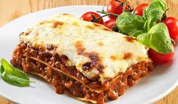

Lasagna
Description
Lasagna is a wide, flat sheet of pasta. Lasagna can refer to either the type of noodle or to the typical lasagna dish which is a dish made with several layers of lasagna sheets with sauce and other ingredients, such as meats and cheese, in between the lasagna noodles.Learn how To make it and enjoy.
Lets Cook Some Lasagna!
Ingredients
- 1 pound ground beef chuck
- 1/2 medium onion, diced (about 3/4 cup)
- 2 cloves garlic, minced
- 3 ounces tomato paste (half a 6-ounce can)
- 1 (28-ounce)can good-quality tomato sauce
- 1/4 cup chopped fresh parsley (preferably flat leaf), packed
- 2 tablespoons chopped fresh oregano, or 2 teaspoons dried oregano
- 1 pinch garlic powder and/or garlic salt
- 1 tablespoon Italian seasoning
- Salt
Steps
- Put pasta water on to boil
- Brown the ground beef
- Cook the bell pepper, onions, garlic, add back the beef
- Transfer to medium sized pot, add tomatoes and remaining sauce ingredients to build the sauce
- Boil and drain the lasagna noodles
- Heat the oven to 375°F
- Assemble the lasagna
- Bake
- Cool and Serve
Enjoy Your Meal!
